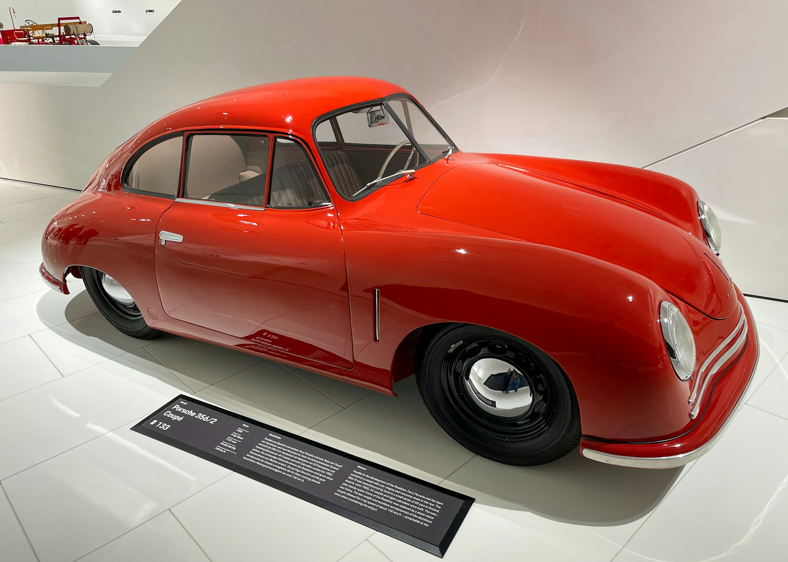
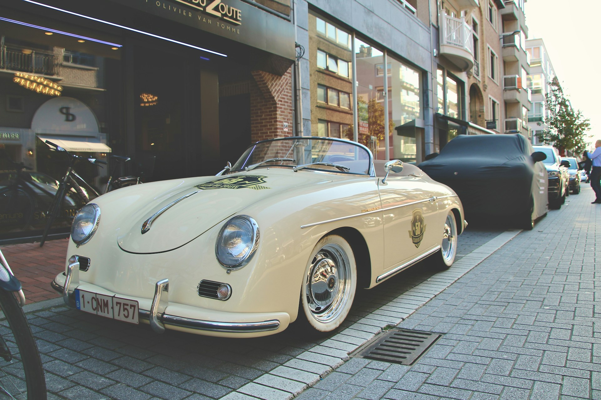
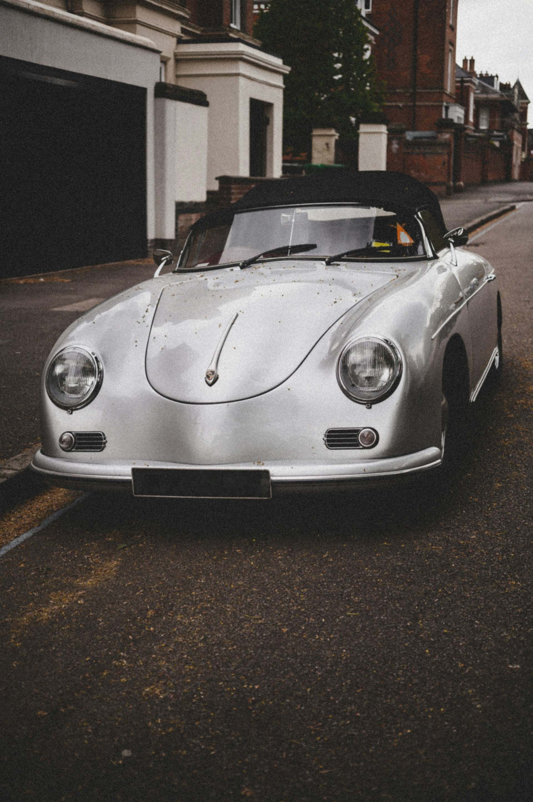

Primele mașini Porsche au fost create de către Ferdinand Porsche înainte ca compania să fie oficial fondată. În anii '30, Ferdinand Porsche a lucrat la dezvoltarea unui automobil mic și accesibil pentru publicul larg, care să fie și performant. Acest proiect a dus la crearea Volkswagen Beetle, cunoscut și sub numele de "Volkswagen Type 1" sau "VW Bug". Acesta poate fi considerat una dintre primele mașini Porsche, deoarece Ferdinand Porsche a fost principalul inginer responsabil pentru proiect. Primul model oficial Porsche a fost Porsche 356, care a fost lansat în 1948. Acesta a fost un coupe sport mic, cu un design distinctiv și o performanță remarcabilă pentru vremea sa. Porsche 356 a fost foarte apreciat pentru agilitatea sa și pentru faptul că era o mașină sport pe care o puteai conduce zi de zi. Porsche 356 a fost succedat de legendarul Porsche 911 în 1963, care a devenit unul dintre cele mai iconice modele din istoria automobilelor. Cu un design clasic și o performanță remarcabilă, Porsche 911 a stabilit standardele pentru mașinile sport de înaltă performanță și a rămas unul dintre cele mai iubite și respectate automobile sportive până în prezent.
  